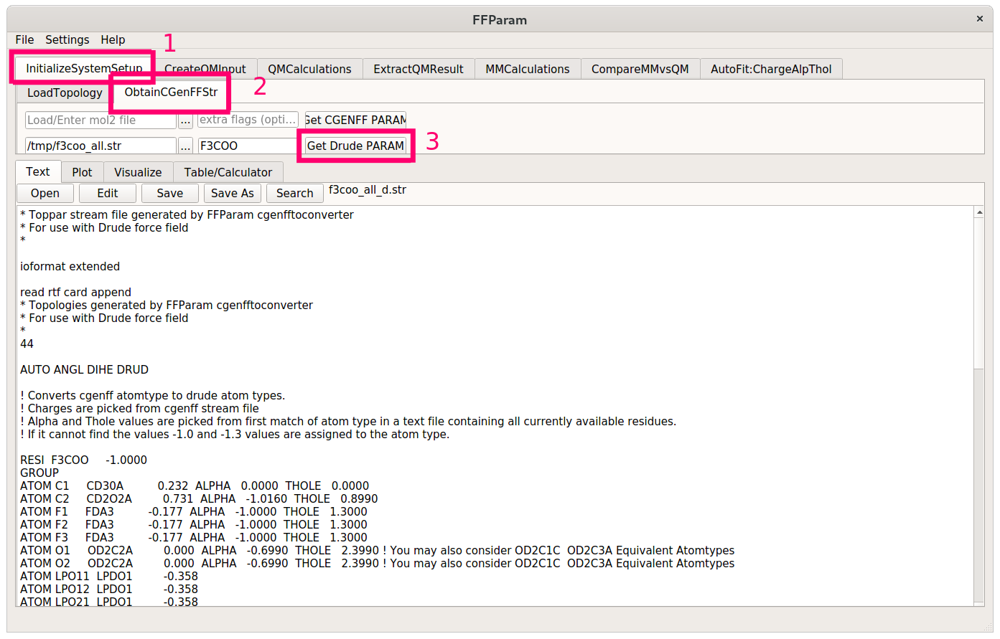
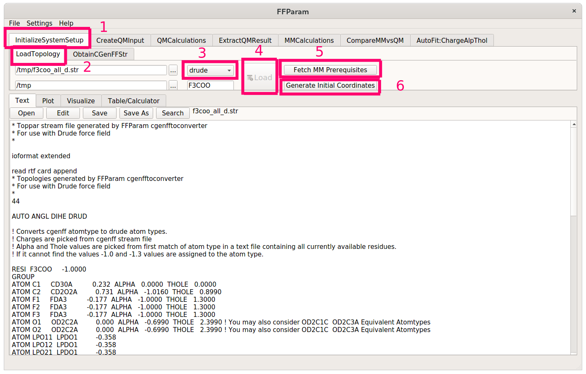
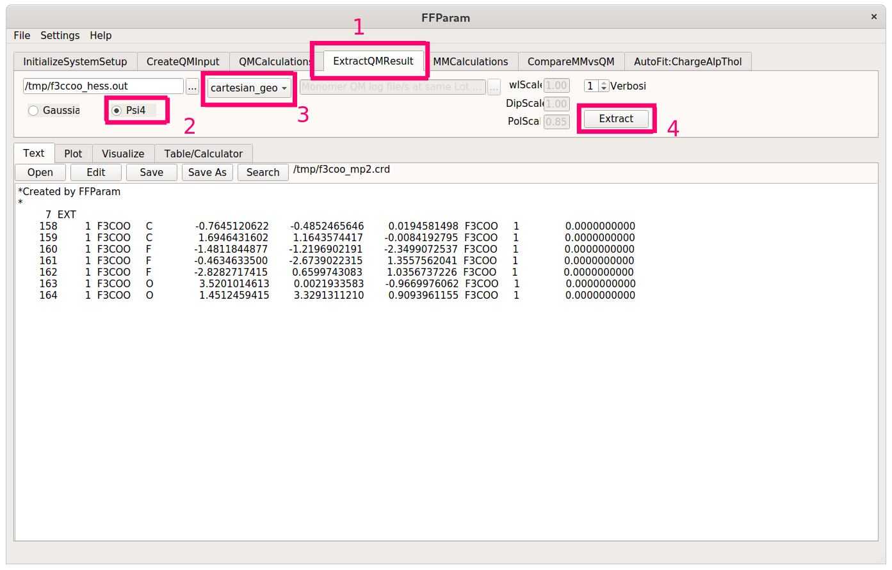
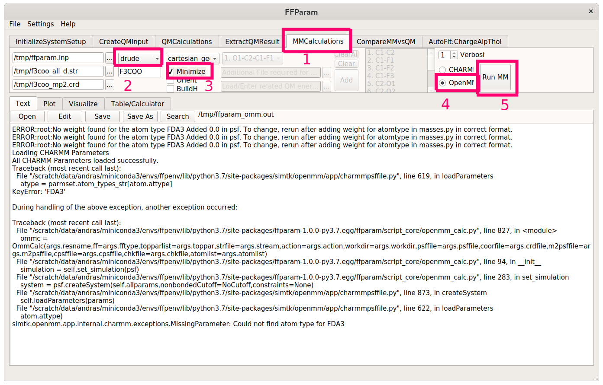

Generating Initial Force Fields
If you already have a working CHARMM-formatted force field that you want to refine using FFGenOpt, then you can skip ahead to using FFGenOpt. Otherwise follow along to see how the initial parameters for F3CCOO- are generated.
Non-polarizable parameters
First, we will generate an initial guess using the paramchem webserver and a .mol2 file.
Note
Using paramchem requires a free-of-charge registration and has a limit of not more than 100 molecules per week.
For that, we will have to create a .mol2 file of trifluoroacetate. You can either use Open Babel from the command line by typing
obabel -ixyz f3ccoo.xyz -omol2 -Of3ccoo.mol2
or you can use avogadro to open the .xyz structure of your molecule and export it as a .mol2 file. In either case, inspect the output of the conversion to make sure that everything is sane (e.g. bond orders). Upload the structure to paramchem and make sure to check the box Include parameters that are already in CGenFF. If everything went smoothly, you should end up with a stream file that looks like this:
* Toppar stream file generated by
* CHARMM General Force Field (CGenFF) program version 2.5
* For use with CGenFF version 4.6
*
read rtf card append
* Topologies generated by
* CHARMM General Force Field (CGenFF) program version 2.5
*
36 1
! "penalty" is the highest penalty score of the associated parameters.
! Penalties lower than 10 indicate the analogy is fair; penalties between 10
! and 50 mean some basic validation is recommended; penalties higher than
! 50 indicate poor analogy and mandate extensive validation/optimization.
RESI F3COO -1.000 ! param penalty= 10.200 ; charge penalty= 37.514
GROUP ! CHARGE CH_PENALTY
ATOM C1 CG302 0.232 ! 35.711
ATOM C2 CG2O3 0.731 ! 37.514
ATOM F1 FGA3 -0.177 ! 14.418
ATOM F2 FGA3 -0.177 ! 14.418
ATOM F3 FGA3 -0.177 ! 14.418
ATOM O1 OG2D2 -0.716 ! 3.134
ATOM O2 OG2D2 -0.716 ! 3.134
BOND C1 C2
BOND C1 F1
BOND C1 F2
BOND C1 F3
BOND C2 O1
BOND C2 O2
IMPR C2 O2 O1 C1
END
read param card flex append
* Parameters generated by analogy by
* CHARMM General Force Field (CGenFF) program version 2.5
*
! Penalties lower than 10 indicate the analogy is fair; penalties between 10
! and 50 mean some basic validation is recommended; penalties higher than
! 50 indicate poor analogy and mandate extensive validation/optimization.
BONDS
CG2O3 CG302 160.95 1.4556 ! ***** , from CG2O3 CG322, PENALTY= 10
CG2O3 OG2D2 525.00 1.2600 ! PROT adm jr. 7/23/91, acetic acid
CG302 FGA3 265.00 1.3400 ! FLUROALK fluoroalkanes
ANGLES
CG302 CG2O3 OG2D2 30.98 104.01 49.99 2.43700 ! ***** , from CG322 CG2O3 OG2D2, PENALTY= 3.2
OG2D2 CG2O3 OG2D2 100.00 128.00 70.00 2.25870 ! PROT adm jr. 7/23/91, correction, ACETATE (KK)
CG2O3 CG302 FGA3 47.24 106.59 30.03 2.49990 ! ***** , from CG2O3 CG322 FGA1, PENALTY= 10.2
FGA3 CG302 FGA3 118.00 107.00 30.00 2.15500 ! FLUROALK fluoroalkanes
DIHEDRALS
OG2D2 CG2O3 CG302 FGA3 0.8107 2 180.00 ! ***** , from OG2D2 CG2O3 CG322 FGA1, PENALTY= 10.2
IMPROPERS
CG2O3 OG2D2 OG2D2 CG302 96.0000 0 0.00 ! ***** , from CG2O3 OG2D2 OG2D2 CG322, PENALTY= 1
END
RETURN
This serves as the basis for our polarizable force field. You can either convert to polarizable atom types by analogy or use an automated tool. The ffparam utility provides a GUI and a documentation detailing how to validate parameters with a high penalty.
Tip
Since ffparam can be picky about the different software versions it needs (e.g. not working with python 3.8 or higher), you could use the following .yml file to build a conda env.
Modify the path in the last line of this file to point to your conda install:
name: ffpenv
channels:
- anaconda
- conda-forge
- defaults
dependencies:
- _libgcc_mutex=0.1=conda_forge
- _openmp_mutex=4.5=1_gnu
- alsa-lib=1.2.3=h516909a_0
- bcrypt=3.2.0=py37h7b6447c_0
- boost=1.70.0=py37h9de70de_1
- boost-cpp=1.70.0=ha2d47e9_1
- bzip2=1.0.8=h7f98852_4
- ca-certificates=2023.5.7=hbcca054_0
- cairo=1.16.0=hb05425b_3
- certifi=2023.5.7=pyhd8ed1ab_0
- cffi=1.15.1=py37h43b0acd_1
- cryptography=38.0.2=py37h5994e8b_1
- cudatoolkit=11.8.0=h37601d7_11
- cycler=0.10.0=py_2
- dbus=1.13.6=h48d8840_2
- expat=2.4.1=h9c3ff4c_0
- fftw=3.3.10=nompi_hf0379b8_106
- fontconfig=2.14.1=hef1e5e3_0
- freeglut=3.2.1=h9c3ff4c_2
- freetype=2.10.4=h0708190_1
- gettext=0.21.1=h27087fc_0
- glib=2.76.2=hfc55251_0
- glib-tools=2.76.2=hfc55251_0
- greenlet=1.1.1=py37hcd2ae1e_0
- gst-plugins-base=1.14.1=h6a678d5_1
- gstreamer=1.14.1=h5eee18b_1
- icu=58.2=hf484d3e_1000
- importlib-metadata=4.8.1=py37h89c1867_0
- jbig=2.1=h7f98852_2003
- jpeg=9d=h36c2ea0_0
- keyutils=1.6.1=h166bdaf_0
- kiwisolver=1.3.2=py37h2527ec5_0
- krb5=1.20.1=h81ceb04_0
- lcms2=2.12=hddcbb42_0
- ld_impl_linux-64=2.36.1=hea4e1c9_2
- lerc=2.2.1=h9c3ff4c_0
- libblas=3.9.0=11_linux64_openblas
- libcblas=3.9.0=11_linux64_openblas
- libclang=11.1.0=default_ha53f305_1
- libdeflate=1.7=h7f98852_5
- libedit=3.1.20191231=he28a2e2_2
- libevent=2.1.12=h3358134_0
- libffi=3.4.2=h7f98852_5
- libgcc-ng=12.2.0=h65d4601_19
- libgfortran-ng=11.1.0=h69a702a_8
- libgfortran5=11.1.0=h6c583b3_8
- libglib=2.76.2=hebfc3b9_0
- libgomp=12.2.0=h65d4601_19
- libiconv=1.17=h166bdaf_0
- liblapack=3.9.0=11_linux64_openblas
- libllvm11=11.1.0=hf817b99_2
- libnsl=2.0.0=h7f98852_0
- libogg=1.3.4=h7f98852_1
- libopenblas=0.3.17=pthreads_h8fe5266_1
- libopus=1.3.1=h7f98852_1
- libpng=1.6.37=h21135ba_2
- libpq=15.2=hb675445_0
- libsodium=1.0.18=h7b6447c_0
- libstdcxx-ng=12.2.0=h46fd767_19
- libtiff=4.3.0=hf544144_1
- libuuid=2.32.1=h7f98852_1000
- libvorbis=1.3.7=h9c3ff4c_0
- libwebp-base=1.2.1=h7f98852_0
- libxcb=1.15=h0b41bf4_0
- libxkbcommon=1.0.3=he3ba5ed_0
- libxml2=2.9.14=h74e7548_0
- libxslt=1.1.32=hae48121_1003
- libzlib=1.2.13=h166bdaf_4
- lz4-c=1.9.3=h9c3ff4c_1
- matplotlib-base=3.4.3=py37h1058ff1_0
- mysql-common=8.0.32=hf1915f5_2
- mysql-libs=8.0.32=hca2cd23_2
- ncurses=6.2=h58526e2_4
- nspr=4.30=h9c3ff4c_0
- nss=3.69=hb5efdd6_0
- numpy=1.21.2=py37h31617e3_0
- ocl-icd=2.3.1=h7f98852_0
- ocl-icd-system=1.0.0=1
- olefile=0.46=pyh9f0ad1d_1
- openjpeg=2.4.0=hb52868f_1
- openmm=7.5.1=py37h96c4ddf_1
- openssl=3.1.0=hd590300_3
- pandas=1.3.2=py37he8f5f7f_0
- paramiko=2.7.2=py_0
- pcre=8.45=h9c3ff4c_0
- pcre2=10.40=hc3806b6_0
- pillow=8.0.0=py37h9a89aac_0
- pip=21.2.4=pyhd8ed1ab_0
- pixman=0.40.0=h36c2ea0_0
- pthread-stubs=0.4=h36c2ea0_1001
- pycairo=1.20.1=py37hfff247e_0
- pycparser=2.20=py_2
- pynacl=1.4.0=py37h7b6447c_1
- pyparsing=2.4.7=pyh9f0ad1d_0
- python=3.7.12=hf930737_100_cpython
- python-dateutil=2.8.2=pyhd8ed1ab_0
- python_abi=3.7=2_cp37m
- pytz=2021.1=pyhd8ed1ab_0
- qt=5.6.3=h8bf5577_3
- rdkit=2019.09.3=py37hb31dc5d_0
- readline=8.1=h46c0cb4_0
- reportlab=3.5.68=py37h69800bb_0
- setuptools=57.4.0=py37h89c1867_0
- six=1.16.0=pyh6c4a22f_0
- sqlalchemy=1.4.23=py37h5e8e339_0
- sqlite=3.36.0=h9cd32fc_0
- tk=8.6.11=h27826a3_1
- tornado=6.1=py37h5e8e339_1
- typing_extensions=3.10.0.0=pyha770c72_0
- wheel=0.37.0=pyhd8ed1ab_1
- xorg-fixesproto=5.0=h7f98852_1002
- xorg-inputproto=2.3.2=h7f98852_1002
- xorg-kbproto=1.0.7=h7f98852_1002
- xorg-libice=1.0.10=h7f98852_0
- xorg-libsm=1.2.3=hd9c2040_1000
- xorg-libx11=1.7.2=h7f98852_0
- xorg-libxau=1.0.9=h7f98852_0
- xorg-libxdmcp=1.1.3=h7f98852_0
- xorg-libxext=1.3.4=h7f98852_1
- xorg-libxfixes=5.0.3=h7f98852_1004
- xorg-libxi=1.7.10=h7f98852_0
- xorg-libxrender=0.9.10=h7f98852_1003
- xorg-renderproto=0.11.1=h7f98852_1002
- xorg-xextproto=7.3.0=h7f98852_1002
- xorg-xproto=7.0.31=h7f98852_1007
- xz=5.2.5=h516909a_1
- zipp=3.5.0=pyhd8ed1ab_0
- zlib=1.2.13=h166bdaf_4
- zstd=1.5.2=h3eb15da_6
- pip:
- ffparam==1.0.0
- pyopengl==3.1.5
- pyside2==5.15.2
- shiboken2==5.15.2
prefix: /path/to/your/conda/envs/ffpenv
Then create a new environment via
conda env create -f ffepnv.yml
After that, build and install ffparam from source and finally install pyside2 manually in the new conda env by running
conda install -n ffpenv -c conda-forge pyside2
Activate the new conda environment -
if everything went smoothly, the ffparam-gui command should present you
with a window and you’ll be ready to start parametrizing.
Polarizable parameters
We could go ahead and reassign partial charges, but the focus of this exercise is the tuning of bonded parameters. For this reason, we will simply use these values and convert them via ffparam.
The final stream file then has the following lines:
* Toppar stream file generated by FFParam cgenfftoconverter
* For use with Drude force field
*
ioformat extended
read rtf card append
* Topologies generated by FFParam cgenfftoconverter
* For use with Drude force field
*
44
AUTO ANGL DIHE DRUD
! Converts cgenff atomtype to drude atom types.
! Charges are picked from cgenff stream file
! Alpha and Thole values are picked from first match of atom type in a text file containing all currently available residues.
! If it cannot find the values -1.0 and -1.3 values are assigned to the atom type.
RESI F3COO -1.0000
GROUP
ATOM C1 CD30A 0.232 ALPHA 0.0000 THOLE 0.0000
ATOM C2 CD2O2A 0.731 ALPHA -1.0160 THOLE 0.8990
ATOM F1 FDA3 -0.177 ALPHA -1.0000 THOLE 1.3000
ATOM F2 FDA3 -0.177 ALPHA -1.0000 THOLE 1.3000
ATOM F3 FDA3 -0.177 ALPHA -1.0000 THOLE 1.3000
ATOM O1 OD2C2A 0.000 ALPHA -0.6990 THOLE 2.3990 ! You may also consider OD2C1C OD2C3A Equivalent Atomtypes
ATOM O2 OD2C2A 0.000 ALPHA -0.6990 THOLE 2.3990 ! You may also consider OD2C1C OD2C3A Equivalent Atomtypes
ATOM LPO11 LPDO1 -0.358
ATOM LPO12 LPDO1 -0.358
ATOM LPO21 LPDO1 -0.358
ATOM LPO22 LPDO1 -0.358
BOND C1 C2
BOND C1 F1
BOND C1 F2
BOND C1 F3
BOND C2 O1
BOND C2 O2
BOND LPO11 O1
BOND LPO12 O1
BOND LPO21 O2
BOND LPO22 O2
LONE RELATIVE LPO11 O1 C2 C1 DIST 0.3500 ANGLE 110.00 DIHE 0.00
LONE RELATIVE LPO12 O1 C2 C1 DIST 0.3500 ANGLE 110.00 DIHE 180.00
LONE RELATIVE LPO21 O2 C2 C1 DIST 0.3500 ANGLE 110.00 DIHE 0.00
LONE RELATIVE LPO22 O2 C2 C1 DIST 0.3500 ANGLE 110.00 DIHE 180.00
END
read param card append
* Parameters generated by FFParam cgenfftoconverter
* For use with Drude force field
*
! Parameters are picked from same text file containing all currently available parameters.
! Similar approach like cgenff is applied, but it is not checked for its robustness.
BONDS
CD30A CD2O2A 410.000 1.360 ! from CD2R5A CD2R5A PENALTY 14.000
CD30A FDA3 200.000 1.810 ! from CD32A SD2C2B PENALTY 25.000
ANGLES
CD2O2A CD30A FDA3 43.000 113.200 ! from CD32A CD32A SD31B PENALTY 44.000
FDA3 CD30A FDA3 45.000 116.500 ! from OD305A CD30FA OD31E PENALTY 157.000
CD30A CD2O2A OD2C2A 40.000 109.300 ! from CD31A CD2O2A OD2C2A PENALTY 2.000
DIHEDRALS
FDA3 CD30A CD2O2A OD2C2A 0.438 1 180.000 ! from OD31A CD32A CD30FA OD31E PENALTY 121.000
FDA3 CD30A CD2O2A OD2C2A 0.587 2 180.000 ! from OD31A CD32A CD30FA OD31E PENALTY 121.000
FDA3 CD30A CD2O2A OD2C2A 0.382 3 180.000 ! from OD31A CD32A CD30FA OD31E PENALTY 121.000
FDA3 CD30A CD2O2A OD2C2A 0.127 6 180.000 ! from OD31A CD32A CD30FA OD31E PENALTY 121.000
IMPROPERS
END
RETURN
If you have access to CHARMM, then you have everything you need to generate a .psf file and coordinates for F3CCOO-. You can skip ahead to using FFGenOpt. If that is not the case, then we will have to jump through some additional hoops to create these files.
First, load the topology of the molecule from the newly generated polarizable stream file. Then hit the Fetch MM Prerequisites and the Generate Initial Coordinates buttons.
Extract the optimized geometry of trifluoroacetate from the Psi4 output using the ExtractQMResult tab. Make sure to check Psi4 and specify cartesian_geom in the dropdown menu. This will create a CHARMM-formatted coordinate file where atom names may or may not be correct.
Next, switch to the MMCalculations tab and specify the necessary stream / input files (consult the documentation if you are stuck) for an MM job. Choose cartesian_geom from the dropdown menu again and check Minimize. Set OpenMM as the MD enginge on the right side of the window and hit Run MM.
You should do this for both the polarizable and the non-polarizable stream files. If you see error messages, don’t panic - we only need the .psf files created by ffparam, not the actual results of the minimization.
Tip
For some atom types, the conversion to polarizable Drude-types doesn’t always work perfectly out-of-the-box. If parameters, residues or atom types are missing, download the latest version of the DGenFF stream files from the homepage of the MacKerell group and specify these as the master toppar files.
If you have the intial coordinates for the non-polarizable and the optimized coordinates for the polarizable stream files, then you can go ahead and start using FFGenOpt.